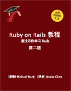

第一弹《Ruby on Rails Tutorial》原书第二版

作者：[美]Michael Hartl
翻译：Andor Chen
- 第 1 章 从零到部署
- 第 2 章 演示程序
- 第 3 章 基本静态的页面
- 第 4 章 Rails 背后的 Ruby
- 第 5 章 完善布局
- 第 6 章 用户模型
- 第 7 章 用户注册
- 第 8 章 登录和退出
- 第 9 章 更新、显示和删除用户
- 第 10 章 用户的微博（翻译中）
- 第 11 章 用户间互相关注（未翻译）